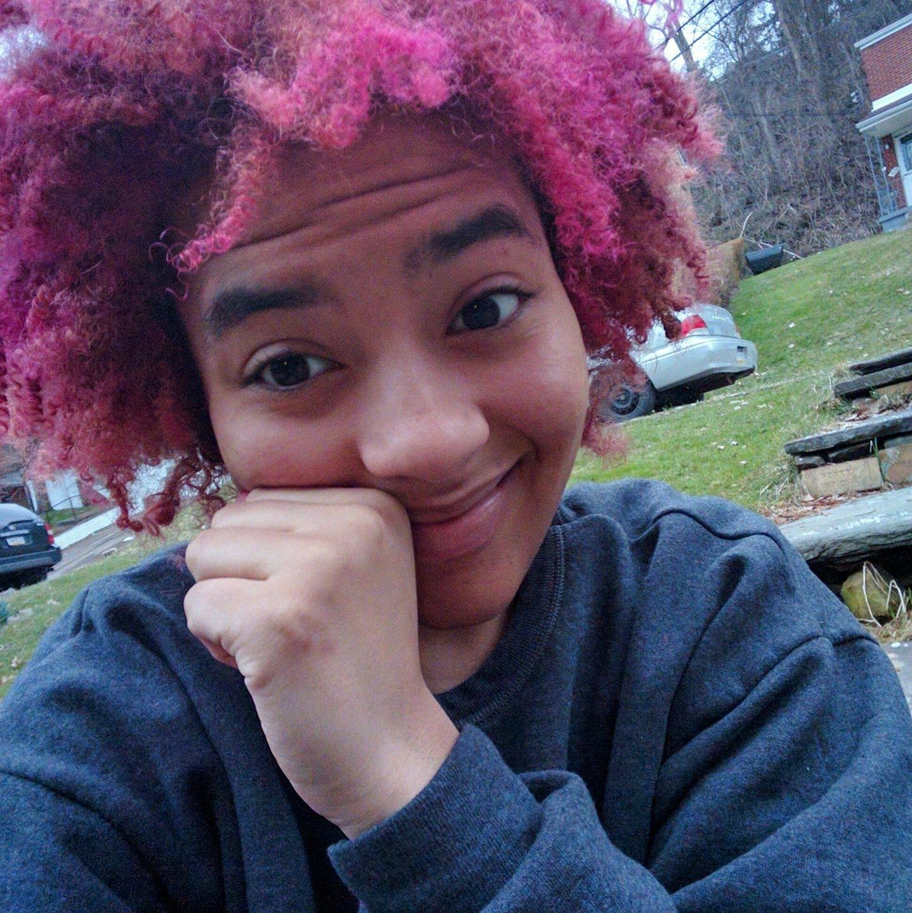

sickandhungry.github.io
ruby's web design + data visualization projects
Angelica Ruby Walker

Education
University of Pittsburgh
August 2014 - April 2018
Current GPA: 3.7
Bachelors of Social Work
Minor in Legal Studies
Certificate in Public and Professional Writing
Relevant Coursework:
Writing for the Public, Public Relations Writing, Writing for Advertising and Fundraising, Composing Digital Media, Data Visualization, Legal Issues in Public Service, Criminal Law, Sex and Marital Law, Law and Social Change, Africana Studies, Policy Analysis, Human Behavior, Social Work Generalist Methods
Penn Hills High School
August 2010 - April 2014
Final GPA: 3.8
Graduated with High Honors
Work Experience
Research Assistant, Pitt Lab for Motivational and Developmental Research
January 2015 - April 2017
Researched ways to help youth stay engaged in school and close socioeconomic educational barriers
Conducted, recorded, and transcribed interviews with young adults and adolescents
Designed and formatted surveys in Qualtrics that were administered to over 3,000 students
Cleaned and standardized survey results in Excel with careful attention to detail
Wrote content for the Lab’s website, newsletter, and training guides for new employees
Journalism Intern, The Thomas Merton Center
May 2016 - September 2016
Wrote articles for The New People, a Pittsburgh-based social justice newspaper
Had two articles, “Pride is Political” and “Clean Drinking Water is Now a Luxury”, featured on front page
Designed visually stimulating infographics for the publication’s blog and social media accounts
Interviewed local activists, school board members, and other representatives for articles
Worked in a 5-person team to plan a Zine Release Party fundraiser; reserved venue, booked performing artists, secured donations for refreshments/raffle prizes, designed/edited zine, and publicized event
Founder, ChockfullaCharms
November 2014 - Present
Sold handmade jewelry to over 500 customers through Etsy, Ebay, and local small business channels
Promptly handled customer complaints to maintain a five star customer service rating
Developed a company website using Wix and moderated other social media pages
Designed and published advertisements via Etsy Ads, Google Adwords, and Facebook for Business
Volunteer Experience
Volunteer, Allegheny County Jail (ACJ) Health Justice Project
February 2016 - June 2016
Organized and participated in protests against inadequate healthcare programs and abusive practices
Attended Allegheny County Council Meetings and lobbied politicians
Performed organization outreach via phone banking, tabling, and flyering
Marketing Project Leader, Just Harvest USDA Summer Food Program
February 2015 - April 2015
Led a small team launching a campaign to raise awareness about the USDA Summer Food Program
Distributed hundreds of flyers to local businesses, reached thousands of people via social media
Wrote public service announcements and coordinated with local radio stations to have them aired
Greeter, Just Harvest VITA Free Tax Preparation Site
January 2015 - April 2015
Communicated with low-income clients, answered question, and assisted with paperwork
Referred eligible clients to programs like SNAP (Food Stamps) and Medicaid
Connected clients with specialists and resources to provide further assistance
Awards
Social Work Summer Undergraduate Research Fellowship
April 2016 and April 2017
Earned $2000 in awards to become a Research Fellow on Oral Histories of Retired African American Educators and Administrators: The Consequences and Costs of Desegregation, a project interviewing retired teachers that worked between 1954 thru 1982 about their exeriences with racism in the workplace
Third Place, SheInnovates Hackathon
Februrary 2017
Developed GlassCeiling, a webarcade that allows girls to collect trading cards for Women of Color scientists by playing fun educational games, over 48 hours
Scholarships
Continental Building Systems Scholarship
Lola G. Duff and William H. Duff Scholarship
National Association of Negro Business and Professional Women's Clubs Scholarship
NEED Achievement Scholarship
Comptaro, Elden, Lewis, and Sparks Memorial Scholarship
Melville Alexander Eberhart Memorial Scholarship
Oliver L. Johnson and William A. Lester Memorial Scholarship
William C. Comptaro Memorial Scholarship
Officer Michael J. Crawshaw Memorial Scholarship
Penn Hills PTA Scholarship
Penn Hills Library Assistant Scholarship
Hobbies
Competitive Super Smash Brothers
I attend weekly Melee tournaments under the tag Ruby. I main Ice Climbers and secondary Jigglypuff.
Writing
I write about diversity, mental health, and other social justice issues. Articles are available on my blog.
Graphic Design
I create art and design things. My blog has a section showcasing my infographics and other designs.
Web Design
I make websites. To see them, go back to this website's homepage and click the links.